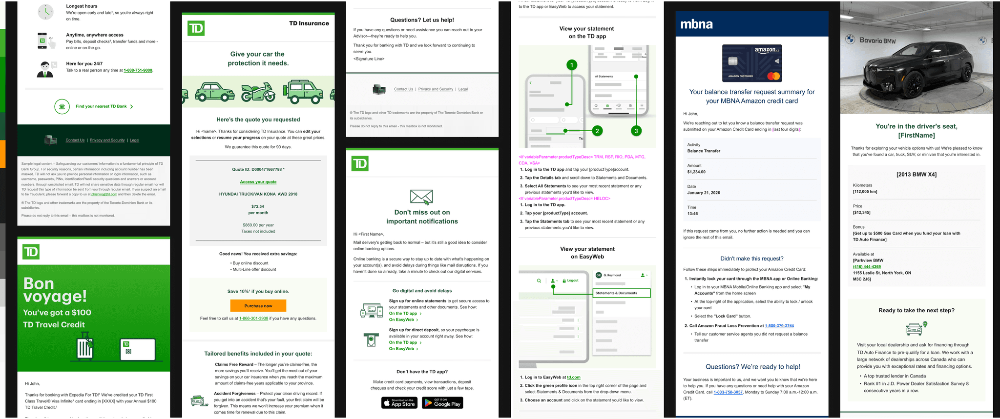
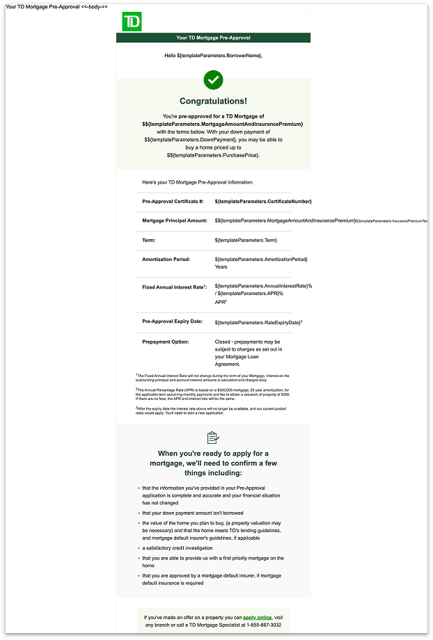
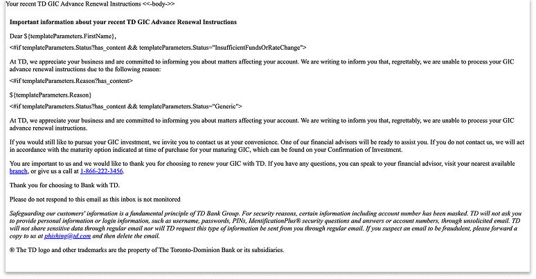
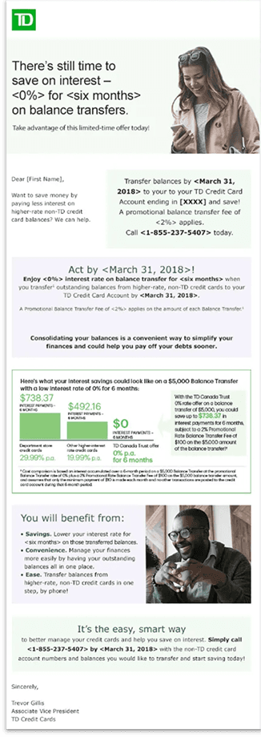
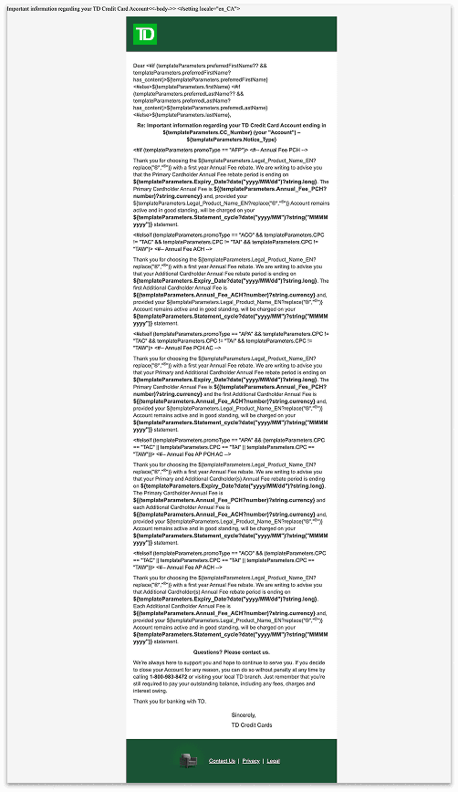
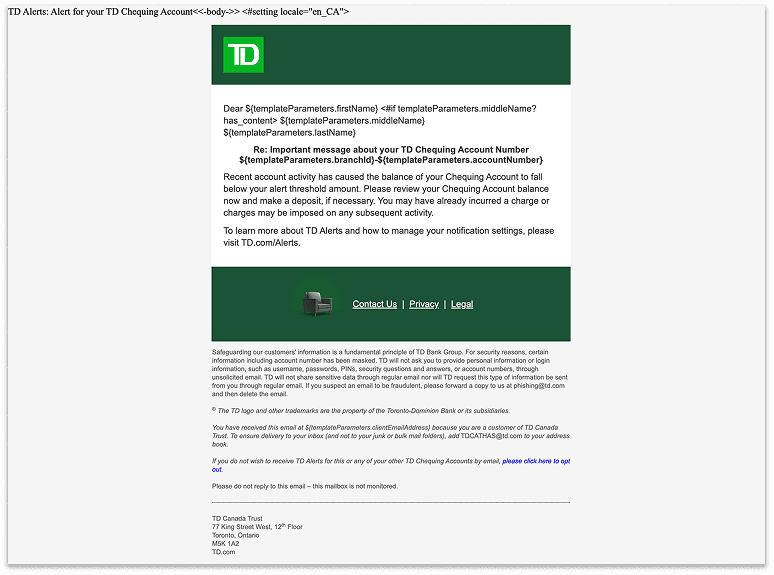
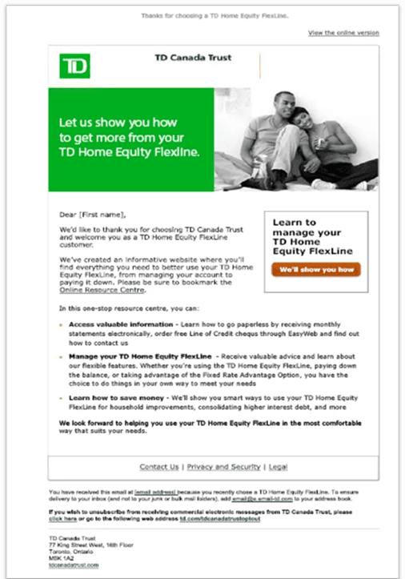
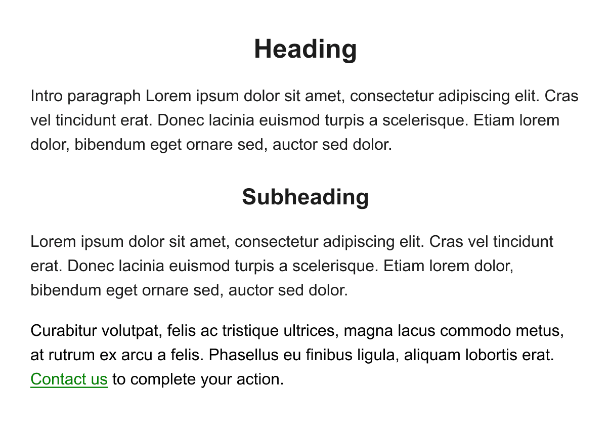
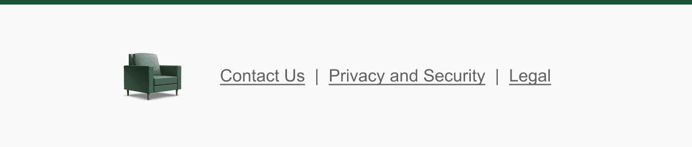
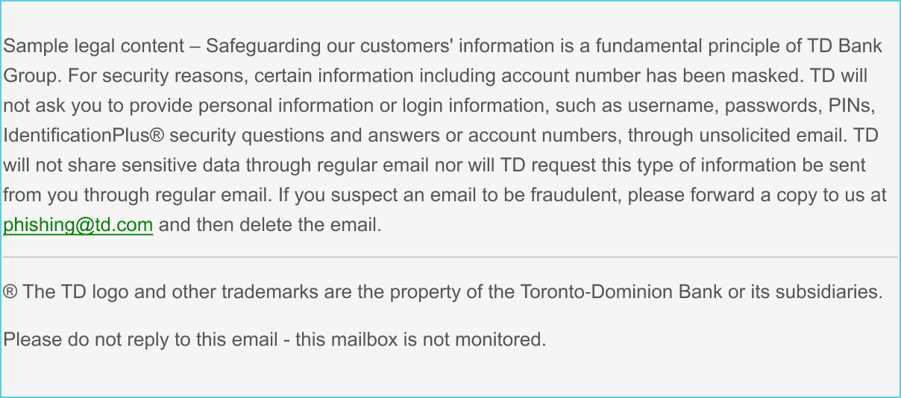

Inconsistent everything
Four primary brands (TD CA, TD US, MBNA and Wealth) operated in silos with inconsistent styles, branding and tone.
A multi-brand email design system for the servicing, transactional, and notification emails that land in TD customers' inboxes every day.

.overview
Servicing, transactional, and notification emails are essential touchpoints in the customer journey. They deliver account information, transaction notifications, and account updates.
My day-to-day work focused on turning a fragmented set of messages into one consistent brand and user experience, so TD clients could trust every email they received.
.the problem
Four primary brands (TD CA, TD US, MBNA and Wealth) operated in silos with inconsistent styles, branding and tone.
Teams were rebuilding emails from scratch each time, creating massive production drag.
Inconsistent branding and formatting raised legitimacy and security concerns for customers.






.proposed solution
A multi-brand email design system for all of TD Bank's email communications, built on the same foundational layouts.
Reusable headers, footers, buttons and content blocks that can be assembled into any operational email while keeping the brand consistent.
Templates for each email type (notifications, statements, alerts and more) that follow consistent visual patterns while leaving room for flexible content.
Training sessions with content designers, project managers and developers on how to structure emails as part of their working process.
.design process
Audited the emails in use across the bank to see how email was actually being used.
Created a simplified version of the existing TD design system to limit the variation seen in email.
Established catch-all templates for frequently used and recurring notifications.
Checked where the foundations and templates were working and where the team still had gaps.
↺ Test fed revisions back into the foundations
.outcomes
For MVP1 we delivered a comprehensive email design system to serve as the foundation for all TD Bank email communications. It included the most frequently used templates, plus flexibility within the system for more complex use cases.
Shows which area of the bank the email is coming from.

The primary area where designers have control and flexibility. Depending on the use case, it can hold:

Optional links that mirror the footer of each brand's website.

Space for all the extra legal fluff we're legally obligated to add.
.fluid design
When updating the email design strategy, we chose a fluid design approach over traditional responsive design. The decision was driven by practical resource constraints and a focus on production efficiency.
.want to learn more?
I'd love to walk you through the failed prototypes, the stakeholder trade-offs, and how we ended up here.